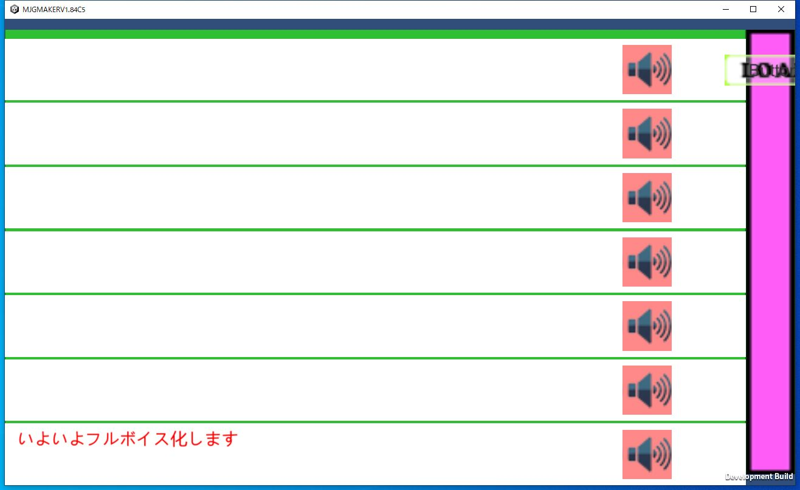
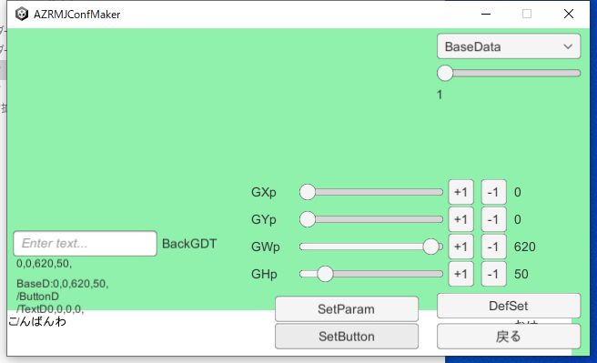
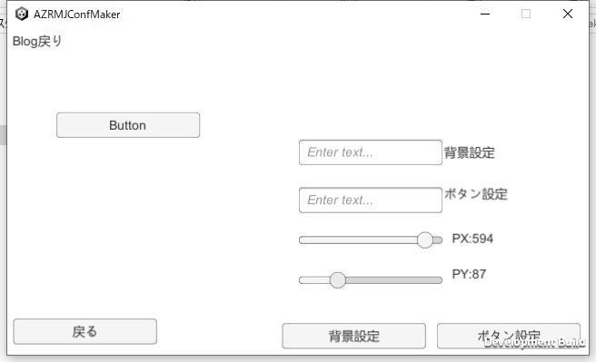
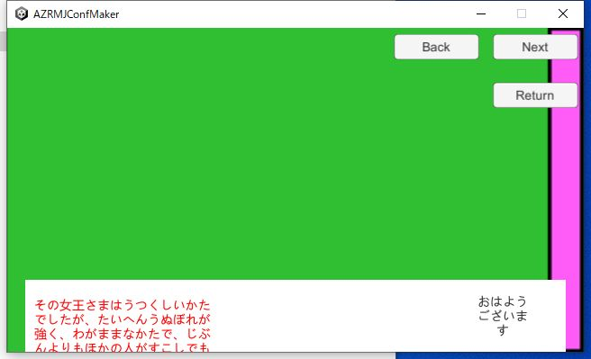

|
前回はセーブ及びロード画面の設定を行いましたので、今回はバックログ画面です。 バックログ画面も前回のセーブ及びロード画面と同じように設定します。 |  |
|
まずは、コンフィグメーカーから各種画面の設定→バックログの設定を選びます。 BaseDataではボタンの背景部分を設定します。Xp,Ypは全体の位置です。 Wp,Hpは幅と高さです。 それで全体の設定を決めたらボタンの位置を決めます。 先ほど決めた全体設定の位置からのXpとYp,ボタン全体の幅と高さを設定できます。 次はテキストの位置のXpとYp、幅と高さです。 最後はテキストのカラーやサイズの設定になります。RGBでの設定となっています 一通り設定したら戻ります。 |  |
|
次に、メニュー画面設定のバックログ画面で、バックログ画面の背景を設定します。 背景が終わったら、メニュー画面設定のBackBT設定で、Blogメニューボタンの位置を設定します。 Blog戻りボタン、Blogページ+、Blogページ-の3つのボタンを順に位置で設定していきましょう Xp、Ypで位置を決めて、ボタン設定で最終的な位置に決めます。また、ボタン設定でボタンに使う画像を決定します 背景設定でバックの背景を設定できますので、見ながら設定することも出来ます |  |
|
最後にバックログAllで一通り配置した物を確認したら終了です。 ファイル書き込みを選んで使うファイルを作成してください。 ファイル作成が終わったら本体側に行きます |  |
|
先ほど作ったファイルを包帯側のテキストに放り込みます その後、本体側を起動させて、BLogボタンを押して、音声ボタンを押して、 きちんと、予定どうりの物が出ていればOKです。 |